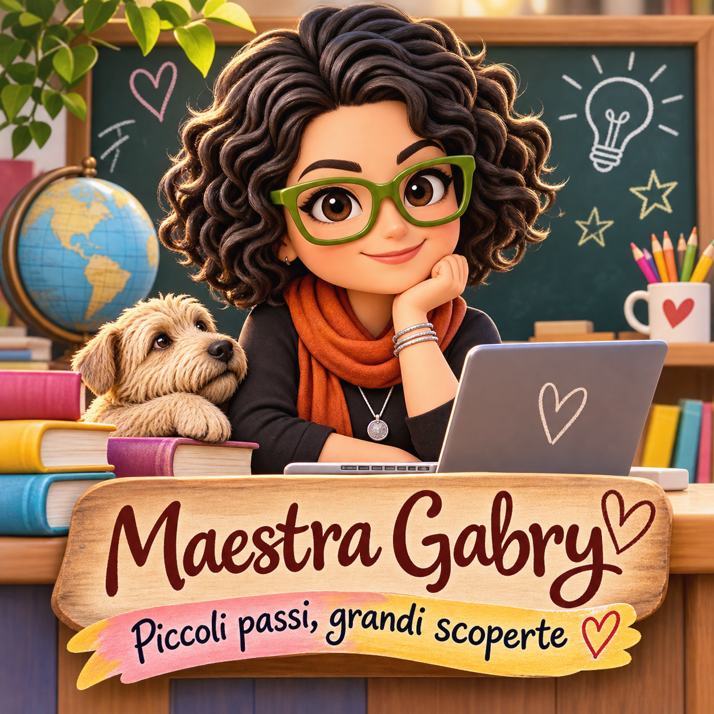

🧩 Pensiero computazionale
Sequenze, percorsi e problemi da risolvere, anche senza schermi.
Credo in una scuola in cui ogni bambino possa imparare con curiosità, creatività e fiducia nelle proprie possibilità.
Mi appassiona progettare attività che uniscono il quaderno, il gioco, l'esperienza concreta e le tecnologie digitali.
Scopri le risorse
Un'attività digitale funziona quando aiuta a capire, collaborare, esplorare e ricevere un riscontro utile. Per questo scelgo gli strumenti partendo dagli obiettivi di apprendimento e non dalla novità tecnologica.
Sequenze, percorsi e problemi da risolvere, anche senza schermi.
Quiz, missioni e sfide cooperative che rendono attivi gli alunni.
Consegne chiare, tempi flessibili e materiali adattabili ai bisogni della classe.
Uso equilibrato della tecnologia e attenzione alla sicurezza online.
Sono Maria Gabriella Boccone, per i miei alunni Maestra Gabry. Il mio percorso educativo e professionale attraversa la scuola, i progetti socio-educativi e l'innovazione didattica. Credo in una didattica che unisce relazione, creatività, inclusione e strumenti digitali.
Dal 2023 insegno nella scuola primaria presso l'I.C.S. «Perone-Levi» di Bari. In precedenza ho insegnato nella scuola dell'infanzia dal 2010 al 2023 e ho svolto supplenze annuali di Religione Cattolica dal 2005 al 2010. Ho inoltre insegnato Italiano, Storia e Pedagogia nella scuola privata «G. Marconi» tra il 1999 e il 2001.
Ho lavorato come educatrice e progettista di servizi per l'infanzia e l'adolescenza e come coordinatrice di progetti educativi territoriali e di strada, maturando esperienza nell'accompagnamento di bambini e ragazzi anche in contesti complessi.
Sono laureata in Lettere Moderne presso l'Università degli Studi di Bari (1995), ho conseguito il Diploma di Maturità Magistrale (1997), le abilitazioni all'insegnamento nella scuola dell'infanzia e primaria (2000) e il Diploma in Scienze Religiose (2003/2004).
Ho seguito percorsi formativi su gamification, coding, didattica digitale, accessibilità, inclusione, realtà aumentata e virtuale e intelligenza artificiale. Tra le certificazioni riportate nel mio curriculum figurano Google Certified Educator – Livello 1, MagicSchool AI Educator – Level 3 e un attestato Canva dedicato agli insegnanti.
Oggi progetto attività interattive, percorsi a livelli, mappe digitali e materiali stampabili, con particolare attenzione alla partecipazione di tutti gli alunni e all'uso consapevole delle tecnologie.
Nel sito trovi schede stampabili, giochi interattivi e percorsi didattici per la scuola primaria. Ogni materiale nasce per essere comprensibile e facile da usare.